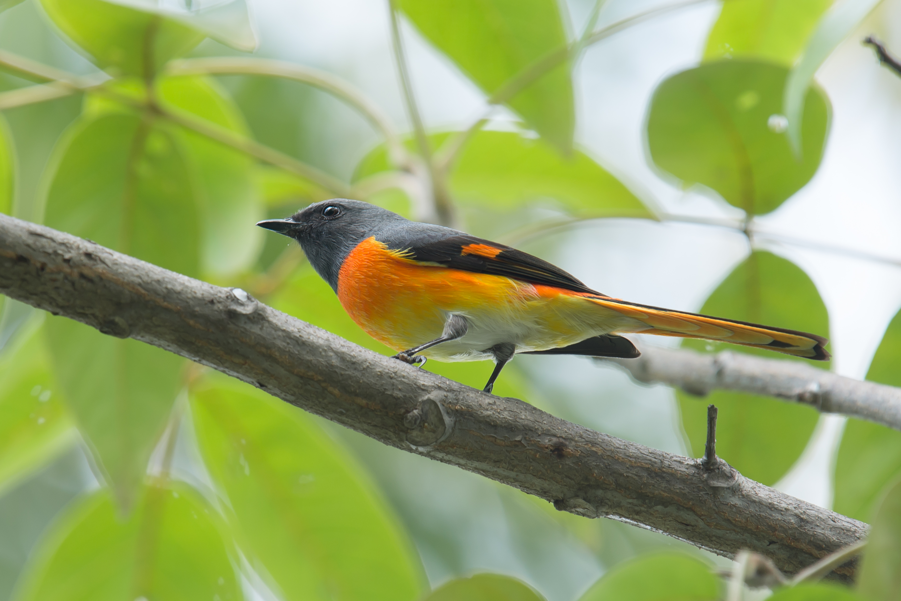
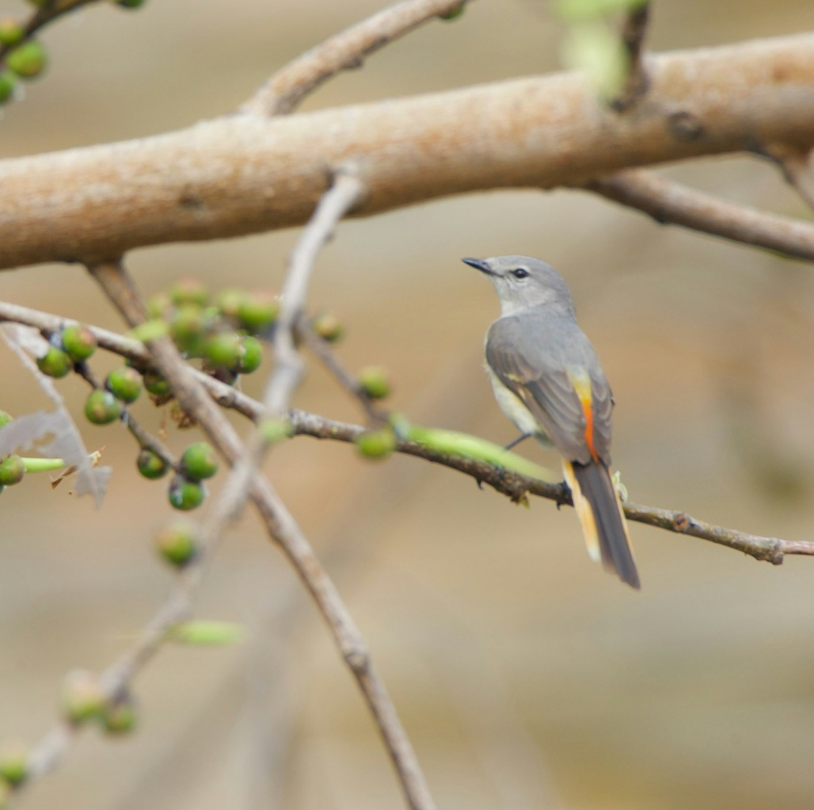

The Small Minivet is a vibrant, insect-eating songbird found across the Indian subcontinent. Males are strikingly colorful, while females are more subdued, both flitting actively through treetops.

Small Minivets inhabit open forests, gardens, and scrublands. They forage actively in the canopy, catching insects mid-air or from foliage, and breed during the dry season in cup-shaped nests.
Read more about this bird and its wonderous characteristics on portals like E-Bird.